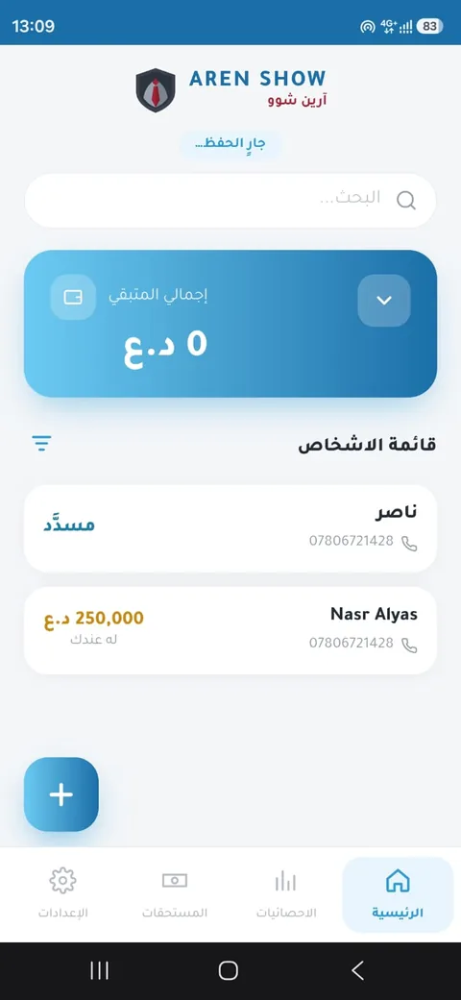
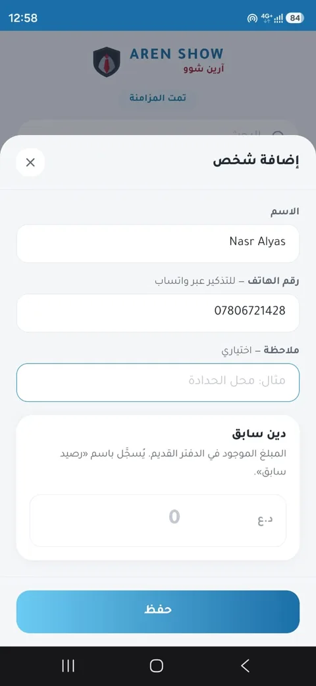
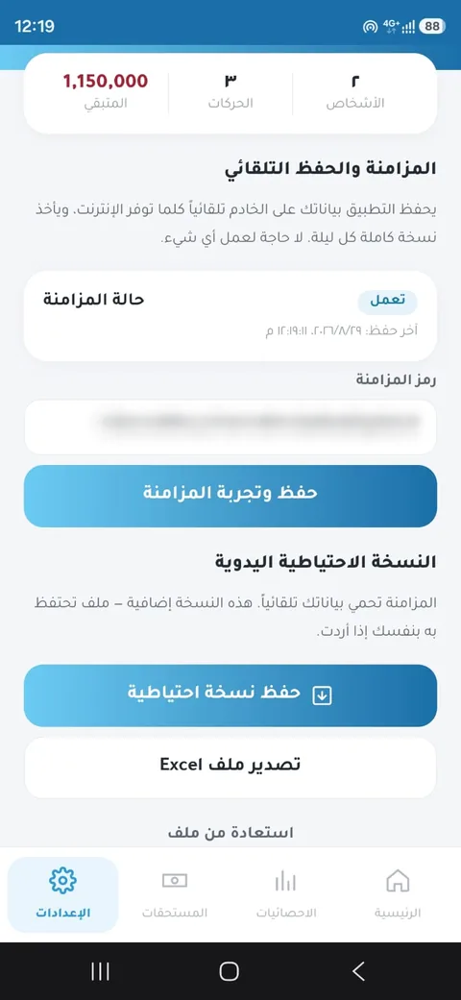

آرين شوو
A customer credit app for shops that still keep their customers' debts in a paper notebook. It runs on any phone, keeps working without internet, and saves everything to the server on its own, with a full backup every night.



Many shops in the region give customers credit and keep track of it in a paper notebook: who took what, who paid, and who needs a reminder. A notebook has no backup, totals are added up by hand, and reminding someone means finding their number in a phone.
The app had to fit how these shops already work. That meant Arabic first, simple enough to use at the counter, and reliable when the internet drops, which it often does.